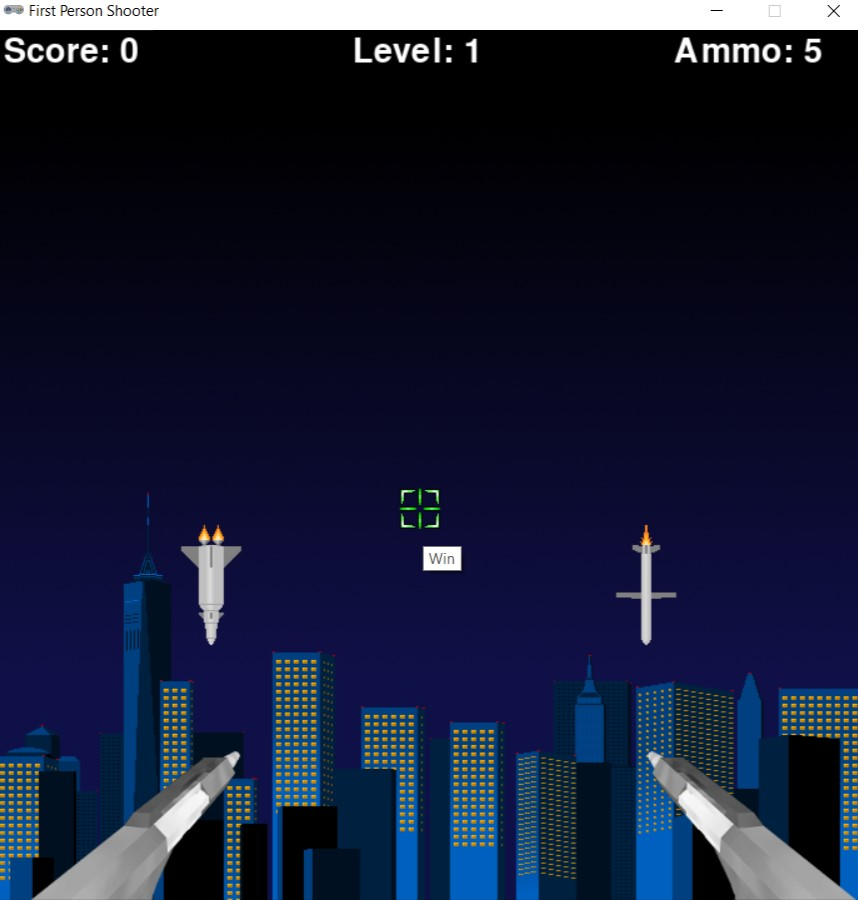

Implementing MASM on Visual Studios
Completion Date:
May 2024
During the Spring semester I was able to partner with another student and develop a way to run MASM code in Microsoft Visual Studios. Click the image to learn more.

Creating a Library Database
Completion Date:
April 2024
In one of my past classes I was able to experiment with database creation and I made a library database. Click on the image to learn more.
Mario Kart Game Development
Completion Date:
April 2024
In a programmming class I took I had the opportunity to develop a mario kart styled 2-D game. Click the image to learn more.
First Person Shooter Game Development
Completion Date:
November 2023
In my first programming class I developed my own first person shooter game. Click the image to learn more.
